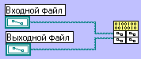

5.2. Узел интерфейса к внешнему коду
Примечание. Существует также возможность обращения к коду, оформленному в виде внешних библиотек динамической компоновки (DLL). Правила конфигурирования CIN-узлов рассмотрим на конкретном примере.
Шаг 1. Создайте новый субВП. Разместите на лицевой панели два средства управления типа "Path" ("Путь доступа к файлу"). Шаг 2. В окне блок-схемы разместите объект типа "Code Interface Node" ("Узел интерфейса к внешнему коду"), выбрав его из палитры "Miscellaneous" ("Разное"). По умолчанию он имеет вход только для одного параметра. Инструментом "стрелочка" увеличьте размеры пиктограммы узла так, чтобы нашлось место для двух параметров (см. Рисунок 4.8).

Рисунок 4.8. Связывание терминалов со входами CIN-узла Примечание. Пиктограмма CIN-узла имеет вид "таблички". Каждая строка таблички разделена на два поля, но соответствует одному параметру. Шаг 3. При помощи инструмента "катушка" свяжите терминалы средств управления с соответствующими входами узла. Шаг 4. Щелкните правой кнопкой мыши на пиктограмме CIN-узла и выберите из всплывающего меню пункт "Create .c file" ("Создать файл с текстом на языке Си"). В появившейся форме определите для этого файла имя (например, example.c) и местоположение (например, в каталоге c:\example). Примечание. В LabVIEW версии 3.0 этот пункт меню называется "Create .h file" ("Создать заголовочный файл"). Файл с текстом программы на языке Си пользователь должен создавать самостоятельно. Шаг 5. Обратитесь ко вновь созданному файлу. Он имеет следующий вид (комментарии переведены на русский язык):
"Главная" функция CIN-узла носит наименование CINRun(). Именно в нее требуется поместить текст алгоритма на языке Си, выполняющий требуемые действия. Шаг 6. В тексте, описывающем алгоритм работы CIN-узла, запрещено использование стандартных для языка Си функций и описателей типов переменных. Вместо них необходимо использовать функции и типы, описанные в Приложении Б. Вот как будет выглядеть текст процедуры CINRun() с учетом этих ограничений:
Шаг 7. Откомпилируйте полученный файл example.c. Компиляция 16-битового CIN-кода для LabVIEW 3.x и 4.x может осуществляться только при помощи компилятора фирмы Watcom. Предположим, что этот компилятор установлен в каталоге c:\watcom, а система LabVIEW - в каталоге c:\labview. Для описания Вашего проекта cоздайте файл example.lvm со следующим содержимым:
Запустите компиляцию командой wmake /f example.lvm. Компиляция 32-битового CIN-кода для LabVIEW 5.x и 6.x может осуществляться при помощи компилятора Visual C/C++ фирмы Microsoft. Предположим, что этот компилятор установлен в каталоге c:\vc, а система LabVIEW - в каталоге c:\labview. Проследите, чтобы в глобальной системной среде имелось определение CINTOOLSDIR=C:\LABVIEW\CINTOOLS. Для описания Вашего проекта создайте файл example.lvm со следующим содержимым:
Запустите компиляцию командой nmake /f example.lvm. Шаг 8. Результатом успешной компиляции должен быть файл с расширением .lsb, например example.lsb. Щелкните правой кнопкой мыши на пиктограмме CIN-узла, выберите в меню пункт "Load Code Resource" ("Загрузить кодовый ресурс") и укажите в появившейся форме Ваш файл example.lsb. Сохраните ВП. Примечание. В отличие от "обычных", ВП с CIN-узлами не могут быть перенесены из одной версии LabVIEW в другую. (с) Constantin E. Climentieff aka DrMad, mailto: drmad@dr.com * http://www.chat.ru/~drmad |